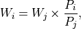
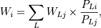
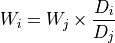
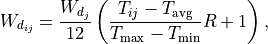
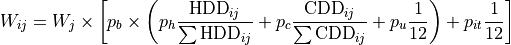

User Guide¶
Architecture¶
Below is a conceptual overview of tethys. The downscaling process can be thought of in 2 main stages: First, the GCAM data is downscaled spatially, from 32 geopolitical regions and 235 basins to a 0.5 geographic degree grid. Then, that data is further downscaled temporally, from every 5 years to monthly. During both of these stages, water withdrawal data is downscaled separately within six sectors (irrigation, livestock, domestic, electricity generation, manufacturing, and mining), using data from various Input files and several Downscaling Algorithms.

Flowchart of Tethys¶
The resulting Output files are written to a folder, which can be specified by the user in the Configuration file. The config file also has options to make tethys perform diagnostics on the output, or even skip the temporal downscaling step, should that be desired.
Generalization¶
The Python language and the dependent library packages used are all open-source. Tethys is highly modularized and designed for easy installation. The modules can be used independently by the user, which also allows the future development and feasibility of user contribution with least effort. Modification of a certain step could be restricted to the corresponding module. Extension of the model is achievable by adding a new module to an existing sub-folder or a new sub-folder. For detailed documentation on Tethys’s modules, refer to the API reference.
In order to run Tethys on alternate input data, no changes to Tethys itself would be needed, provided the data is appropriately prepared (i.e. in the same fashion described in Input files). User control over Tethys is primarily done through a configuration file, which is explained in the following section.
Configuration file¶
Tethys uses an INI configuration file to specify the input data, options, and output folder. The example config.ini is extensively commented. For concise reference, the following tables summarize the keys for each section, with links to documentation for the relevant file or directory when applicable.
Note
Depending on where you’ve extracted the example data, you may need to use the absolute paths for each file or folder, and acceptable directory separators may vary between operating systems.
[Project]¶
This section defines project-level parameters.
Key Name |
Value Description |
|---|---|
ProjectName |
Name for the downscaling project |
InputFolder |
Path to Example/Input |
OutputFolder |
Folder where Output files will be created |
rgnmapdir |
Path to rgn32 |
OutputFormat |
0 = create both (default), 1 = csv file, 2 = netcdf(nc) file |
OutputUnit |
0 = cubic kilometers (default), 1 = mm |
GCAMUSA |
0 = 32 region GCAM (default), 1 = GCAMUSA |
PerformWithdrawal |
1 = downscale withdrawal (default), 0 = skip |
PerformConsumption |
1 = downscale consumption, 0 = skip (default) |
PerformDiagnostics |
1 = perform diagnostics (default), 0 = don’t |
PerformTemporal |
0 = don’t perform temporal downscaling (default), 1 = do |
UseDemeter |
1 = use irrigated crop area from Demeter, 0 = don’t (default) |
DemeterOutputFolder |
Path to folder with Demeter outputs |
Note
If you want to run consumption:
In order to run consumption using a built-in consumption query, you can add PerformConsumption = 1 to this section (it is 0 by default). Output files for consumption will be written to a separate folder, named <OutputFolder>_C.
In order to suppress withdrawal and only run consumption, you need to explicitly set PerformWithdrawal = 0 (since it is 1 by default), and remove GCAM_query from the [GCAM] section.
You can also use the built-in query for withdrawal by specifying PerformWithdrawal = 1, but you must remove GCAM_query from the [GCAM] section, or it will override the built-in.
[GCAM]¶
This section indicates the GCAM database location, query, and options.
Key Name |
Value Description |
|---|---|
GCAM_subreg |
GCAM version; 0 = regions/aez, 1= regions/basin |
GCAM_DBpath |
Path to the GCAM folder, e.g. Example/Input/GCAM |
GCAM_DBfile |
The name of the database folder, e.g. gcam5p1_ref_db |
GCAM_query |
xml query file for GCAM database withdrawals, e.g. query_regbasin.xml |
GCAM_query_C |
xml query file for consumption |
GCAM_Years |
comma separated YYYY string, e.g. 2005,2010,2015,2020,2025 |
Note
New: using built-in queries
Rather than defining GCAM_query in this section, you can run Tethys using a built-in withdrawal query by adding PerformWithdrawal = 1 to the [Project] section. Note that if GCAM_query is specified, it takes precedence over the built-in, and will cause withdrawals to be downscaled in the even if PerformWithdrawal = 0.
In order to run consumption with a custom query, you can add GCAM_query_C = <your_directory>/query_consumption.xml to this section. Again, note that this will take precedence over the built-in should PerformConsumption = 1, and will cause consumption to run even if PerformConsumption = 0.
These options are provided for flexibility and to preserve workflows reliant on existing config files, at least in the near future.
[GriddedMap]¶
This section contains the paths to various files from Example/Input, rgn32, and harmonized_inputs.
Note
Except for the “Population”, “Irrigation”, and “Livestock” files, tethys now includes built-din defaults for this section, selected according to the GCAMUSA option.
These defaults can be overridden by simply providing the path to the desired file as before.
Key Name |
Value Description |
|---|---|
Area |
Path to Grid_Areas_ID.csv |
Coord |
Path to coordinates.csv |
AEZ |
Path to AEZ.csv |
Population_GPW |
Path to GPW_population.csv |
Population_HYDE |
Path to HYDE_population.csv |
Irrigation_GMIA |
Path to GMIA_cropland.csv |
Irrigation_HYDE |
Path to HYDE_cropland.csv |
Livestock_Buffalo |
Path to livestock_buffalo.csv |
Livestock_Cattle |
Path to livestock_cattle.csv |
Livestock_Goat |
Path to livestock_goat.csv |
Livestock_Sheep |
Path to livestock_sheep.csv |
Livestock_Poultry |
Path to livestock_poultry.csv |
Livestock_Pig |
Path to livestock_pig.csv |
BasinIDs |
Path to basin.csv |
BasinNames |
Path to BasinNames.csv |
RegionIDs |
Path to region32_grids.csv |
RegionNames |
Path to RgnNames.csv |
CountryIDs |
Path to country.csv |
CountryNames |
Path to country-names.csv |
GCAM_Basin_Key |
Path to gcam_basin_lookup.csv |
Buffalo_Fraction |
Path to bfracFAO2005.csv |
Goat_Fraction |
Path to gfracFAO2005.csv |
Irrigated_Fract |
Path to irrigation-frac.csv |
[TemporalDownscaling]¶
This section is only required if PerformTemporal = 1 in the [Project] section. It contains paths to files used in temporal downscaling.
Key Name |
Value Description |
|---|---|
temporal_climate |
Path to ClimateForcing/WATCH/watch_wfdei_monthly_1971_2010.npz |
Domestic_R |
Path to DomesticR.csv |
Elec_Building |
Path to ElecBuilding_1971_2010.csv |
Elec_Industry |
Path to ElecIndustry_1971_2010.csv |
Elec_Building_heat |
Path to ElecBuildingHeat_1971_2010.csv |
Elec_Building_cool |
Path to ElecBuildingCool_1971_2010.csv |
Elec_Building_others |
Path to ElecBuildingOthers_1971_2010.csv |
Irr_MonthlyData |
Path to Irrigation/pcrglobwb_wfdei_varsoc_pirrww_global_monthly_1971_2010.nc |
TemporalInterpolation |
0 = GCAM outputs are annual (default), 1 = linear interpolation needed |
[Logger]¶
Defualt logging options can be found in the table below.
Key Name |
Value Description |
|---|---|
filename |
mainlog.txt |
MinLogLevel |
DEBUG |
MinScreenLevel |
INFO |
Input files¶
This section contains descriptions of the example input files from Installing Package Data, and some additional reference files included with tethys. Should you wish to run tethys with alternate input data, you’ll need to prepare those files using this same structure.
Note
Adapted from https://github.com/JGCRI/tethys/blob/main/docs/ReadMe_IO_Data.pdf, may need to be further modified to reflect recent changes.
Example/Input¶
The following files are located at the top level of the example input folder. They provide information about the regions, basins, countries, and grid coordinates.
BasinNames.csv¶
235 basin names corresponding to harmonized_inputs/basin.csv
File Format: csv, no header
Dimension: 235 rows x 1 column
coordinates.csv¶
Coordinates of the 67,420 grid cells
File Format: csv, no header
Dimension: 67,420 rows x 5 columns (ID #, longitude, latitude, ilon, ilat)
country-names.csv¶
249 country names corresponding to harmonized_inputs/country.csv
File Format: csv, no header
Dimension: 235 row x 2 columns, first column is ID (integer, 0-248), second column is country name (string)
gcam_basin_lookup.csv¶
235 gcam basin lookup names corresponding to basin id and name
File Format: csv, no header
Dimension: 235 row x 3 columns, first column is ID (integer, 1-235), second column is basin name (string), third column is gcam lookup name
Grid_Areas_ID.csv¶
Area value of each land grid cell
File Format: csv, no header
Dimension: 67,420 rows x 1 column, decimal values
Unit: ha (multiply by 0.01 to convert to km2)
Reference: N/A
GCAM¶
The GCAM folder is where the regional water withdrawal data to be downscaled comes from. It actually contains full GCAM output databases (which have a lot of data other than water withdrawal, hence their size). These databases are queried for the relevant water withdrawal data across the six sectors (at the scale of 32 regions, every 5 years), which gets fed into tethys.
The example data contains 2 different output databases from GCAM: gcam5p1_ref_db and ssp1_rcp26_gfdl. There are are also 2 xml query files, query_regaez.xml and query_regbasin.xml corresponding to different versions of GCAM (regions and AEZ or regions and basins). The choice of database and query is indicated by the user in the config file.
The specifics of GCAM outputs and queries are outside the scope of this documentation. For more information, refer to RELEVANT_LINK.
rgn32¶
The rgn32 folder contains additional information about these regions, such as region names, and various region-specific conversion ratios (eg, GCAM models the aggregate sheep+goat count in each region, but separate sheep and goat populations can be reconstructed from a “sheep to goat” ratio).
RgnNames.csv¶
The region names (e.g. “USA”) and its corresponding id (e.g. 1 for USA).
File Format: csv, one-row header
Dimension: 32 rows x 2 columns, first column for region name (string), second column for region id (integer, 1-32)
bfracFAO2005.csv and gfracFAO2005.csv¶
Livestock in GCAM has five sectors (beef, dairy, pork, poultry and sheepgoat), to be reorganized into six sectors used by Tethys (buffalo, cattle, goat, sheep, pig and poultry), two fraction numbers are needed. One is recorded in bfracFAO2005.csv, the other is recorded in gfracFAO2005.csv:
buffalo = (beef + diary)*bfrac
cattle = (beef + diary)*(1-bfrac)
goat = sheepgoat*gfrac
sheep = sheepgoat*(1-gfrac)
File Format: csv, one-row header
Dimension: 32 rows x 2 columns, first column for region name (string), second column for buffalo (bfrac) or goat (gfrac) fraction (decimal, < 1) in this region
Unit: N/A
Reference: estimated from FAO gridded livestock of the world (refer to “harmonized inputs/livestock_*.csv”)
irrigation-frac.csv¶
Pre-calculated irrigation shares as a fixed input, is used when extracting data files from GCAM database, if GCAM didn’t produce endogenous irrigated and rain-fed land allocations.
File Format: csv, one-row header
Dimension: 26 columns: region #, aez #, crop #, 1990, 2005, 2010, …, 2100, region name, crop name, decimal values (0-1) for column 4-24
TD_Elec_paras¶
Five tables are included in this folder:
ElecBuilding_1971_2010.csv |
Pb |
ElecBuildingHeat_1971_2010.csv |
Ph |
ElecBuildingCool_1971_2010.csv |
Pc |
ElecBuildingOthers_1971_2010.csv |
Pu |
ElecIndustry_1971_2010.csv |
Pit |
Pb and Pit are the proportions of total electricity use for building and transportation and industry together, respectively, Pb + Pit = 1.
Ph, Pc and Pu are the proportions of total building electricity use for heating, cooling and other home utilities, respectively, Ph + Pc + Pu = 1.
The proportions of electricity use, are used in temporal downscaling of electricity sector
File Format: csv, no header
Dimension: 32 rows x 40 columns (32 regions x 40 years), decimal values (0-1)
Unit: N/A
Reference: IEA historical data, Huang et al. (2017)
harmonized_inputs¶
The term “grid” is used here to describe the spatial resolution of 0.5 geographic degrees. A global full data map contains a total of 259,200 grid cells (360 x 720), of which 67,420 grid cells are categorized as “land grids” and are considered valid for simulation purposes. In this study, the land grid cells are used to define a “gridded” map according to the coordinates and the indices of the 67,420 cells on the 360 x 720 grid. The inputs converted using the 67,420 grid cells according to the coordinate data file are called harmonized inputs.
AEZ.csv¶
AEZ ID for each cell, 18 zones: 1-18
File Format: csv, one-row header
Dimension: 67,420 rows x 1 column
basin.csv¶
Basin ID for each cell, 235 basins: 1-235
File Format: csv, one-row header
Dimension: 67,420 rows x 1 column
country.csv¶
Country ID for each cell, 249 countries: 1-249
File Format: csv, one-row header
Dimension: 67,420 rows x 1 column
GMIA_cropland.csv¶
Irrigation areas in 2005 in each grid cell
File Format: csv, one-row header
Dimension: 67,420 rows x 1 column
Unit: km2
Reference: Siebert, 2013
HYDE_cropland.csv¶
Irrigation area in 1900-2000 in each grid cell: every 10 years
File Format: csv, one-row header
Dimension: 67,420 rows x 11 columns (11 years)
Unit: km2
Reference: HYDE 3.1 Final, Klein Goldewijk et al., 2011
HYDE_grassland.csv¶
Irrigation areas in 1900-2000 in each grid cell: every 10 years
File Format: csv, one-row header
Dimension: 67,420 rows x 11 columns (11 years)
Unit: km2
Reference: HYDE 3.1 Final, Klein Goldewijk et al., 2011
GPW_population.csv¶
Population: 1990-2015 data, every 5 years
File Format: csv, one-row header
Dimension: 67,420 rows x 6 columns (6 years)
Unit: N/A
Reference: CIESIN, 2016
HYDE_population.csv¶
Population: 1750-2000 data, every 10 years
File Format: csv, one-row header
Dimension: 67,420 rows x 26 columns (26 years)
Unit: N/A
Reference: HYDE 3.1 Final, Klein Goldewijk et al., 2011
livestock_(animal).csv¶
6 files, containing the number of (buffalo/cattle/goat/pig/poultry/sheep) in each grid cell
File Format: csv, one-row header
Dimension: 67,420 rows x 1 column
Unit: head
Reference: Wint and Robinson, 2007.
soil_moisture.csv¶
Population: Maximum Soil Moisture
File Format: csv, one-row header
Dimension: 67,420 rows x 1 column
Unit: mm/month
Reference: FAO, 2003.
region32_grids.csv¶
Region ID for each cell, 32 regions: 1-32
File Format: csv, one-row header
Dimension: 67,420 rows x 1 column
TemporalDownscaling¶
The following files and folders are used during the temporal downscaling step.
DomesticR.csv¶
The amplitude (dimensionless) which measures the relative difference of domestic water withdraw between the warmest and coldest months. It is used in the temporal downscaling of domestic sector.
File Format: csv, one-row header
Dimension: 67,420 rows x 1 column, decimal values
Unit: N/A
Reference: calibrated by Huang et al., 2017
Irrigation¶
The monthly gridded irrigation water withdrawal was estimated by relying on monthly irrigation results from other global hydrological models to quantify monthly weighting profiles of how irrigation is spread out within a year in a particular region and per crop type.
In this folder, three global gridded monthly irrigation water withdrawal models are provided as references for the period of 1971-2010:
H08 (Hanasaki et al., 2008a; 2008b)
h08_wfdei_hist_varsoc_pirrww_global_monthly_1971_2010.nc
LPJmL (Rost et al., 2008)
lpjml_wfdei_hist_varsoc_co2_pirrww_global_monthly_1971_2010.nc
PCR-GLOBWB (Van Beek et al., 2011; Wada et al., 2011)
pcrglobwb_wfdei_varsoc_pirrww_global_monthly_1971_2010.nc
The original data files were obtained from ISI-MIP (Warszawski et al., 2014). We processed the original data files into gridded monthly percentage values as the weighting profiles applied in temporal downscaling of irrigation.
The data files are classic NetCDF files. They follow the same format:
Size: 67,420 x 480
Dimensions: index, month
Datatype: single
Variables: ‘pirrww’
For more information about these three models and their data files, please refer to Huang et al., 2017.
ClimateForcing/WATCH¶
For temporal downscaling of electricity and domestic water withdrawal from annual to monthly, the gridded daily air temperature data from WATCH forcing data methodology applied to Era Interim reanalysis data (WFDEI) from 1971 to 2010 is applied (Weedon et al., 2014).
Note
these may have been replaced by 1 file, watch_wfdei_monthly_1971_2010.npz
tas_watch_wfdei_monthly_1971_2010.mat¶
Averaged temperature in a month.
File Format: mat (MATLAB formatted data), one variable: “tas”
Dimension: 67,420 x 480 (480 months in 1971 - 2010)
Unit: Celsius
hdd_cdd_tas_watch_wfdei_monthly_1971_2010.mat¶
HDD (heating degree days) and CDD (cooling degree days) in a month
File Format: mat (MATLAB formatted data), two variables: “hdd” and “cdd”
Dimension: 67,420 x 480 (480 months in 1971 - 2010)
Unit: Celsius
For more information about how to calculate HDD and CDD, please refer to Huang et al., 2017.
tethys/reference¶
In addition to the input files from the example data, there are a few reference files included with Tethys itself. The files in this folder are dependent files used by temporal downscaling modules of Tethys. They will be copied at install time to Tethys’s folder inside site-packages.
dist.csv¶
This file lists the distances between a target basin and its neighbor basins, to show the closest neighbor basins for a target basin. The basin IDs are based on the global basin map (235 basins). It is a fixed input.
File Format: csv, one header
Dimension: 4 columns (target basin #, neighbor basin #, distance in m, value ID)
Unit: meters
Reference: N/A
obv_dom.csv¶
Observed domestic water withdrawals (averaged) in 12 months at five cities in five different countries. The values do not need to be unformed under the same unit for different cities since normalized values (=each month / 12 month total) will be used by Tethys.
File Format: csv, one-row header
Dimension: 5 rows (5 cities) x 18 columns (city name, country name, period of years, gird index in 67,420 cells, latitude, longitude, data of Jan, Feb, …, Dec)
Unit: N/A
Reference: Collected and consolidated by Huang et al. (2017)
IEA_9_Countries_Monthly_AvgElectricity_2000_2015.csv¶
Observed electricity generation (averaged) in 12 months at 9 countries. Normalized values (=each month / 12 month total) will be used by Tethys.
File Format: csv, one-row header
Dimension: 13 rows (12 months + 1) x 10 columns (9 countries + 1), the first row of data lists the country IDs from 249 counties (ID: 0-248), the first column of data lists the month index.
Unit: GWh
Reference: Collected and consolidated by Huang et al. (2017) from IEA historical data
Output files¶
Below is an overview of the output files that will be created by Tethys, which include the downscaling results and some diagnostics files.
Downscaling Results¶
The downscaled withdrawal results for each sector will be saved. They are divided into two groups, Spatial Downscaling (SD) results (file names starting with “wd”) and Temporal Downscaling (TD) results (file names starting with “twd”). The following abbreviations for sectors are used in the file names:
Sector Name |
Abbreviation |
|---|---|
Domestic |
dom |
Electricity Generation |
elec |
Manufacturing |
mfg |
Mining |
min |
Irrigation |
irr |
Livestock |
liv |
The abbreviation “nonag” is used for non-agricultural sectors (i.e. the total of all but irrigation and livestock).
Note
If you run Tethys for consumption, these outputs will be written to a seperate folder, and “wd” will be replaced with “cd” in the resulting file names.
Be aware that at present the consumption output files are actually written with “wd” names first, and then renamed to “cd” names (hence why they are written to a separate folder). This means that if you do something like move withdrawal outputs into the consumption folder and then re-run consumption, or attempt to access consumption results after they have been written but before they have been renamed, unexpected behavior may occur.
wd(sector)_km3peryr.csv¶
There are 8 spatial downscaling result files. One for each of the 6 sectors (dom/elec/mfg/min/irr/liv), combined results for the non-agricultural sectors (nonag), and the totals (total).
File Format: csv, one-row header
Dimension: 67,420 rows x 5+ columns (grid ID, lon, lat, ilon, ilat; first_year, …, final_year)
Unit: km3
twd(sector)_km3permonth.csv¶
There are 6 temporal downscaling result files, one for each of the 6 sectors (dom/elec/mfg/min/irr/liv).
File Format: csv, one-row header
Dimension: 67,420 rows x 5+ columns (grid ID, lon,lat, ilon, ilat; first_month, … , final_month)
Unit: km3
Diagnostics¶
By default, Tethys will also output diagnostics files for quality control. These allow the user to verify the downscaling process has preserved the total amount of water used within a region for each time step, ensuring the output grid satisfies the boundary conditions imposed by GCAM.
Diagnostics_Spatial_Downscaling.csv¶
This table is created by the diagnostics module for spatial downscaling. It lists the water withdrawal values for each year by region, and each water demand sector, comparing between downscaled results and input data from GCAM along with their differences.
Diagnostics_Temporal_Downscaling_Irrigation.csv¶
Diagnostics_Temporal_Downscaling_Domestic.png¶
Diagnostics_Temporal_Downscaling_Electricity.png¶
Note
I don’t believe the png files are currently created.
These three files are created by the diagnostics module for temporal downscaling. A diagnostics table for irrigation sector will be generated listing the water withdrawal values for each year, each basin before and after temporal downscaling. Two figures will also be plotted to show the simulated monthly profiles for domestic sector and electricity generation sector respectively, comparing with overserved results. The observed monthly profiles were imported from files described in “tethys/reference” (Huang et al., 2017).
Downscaling Algorithms¶
Water withdrawal data is downscaled spatially first, then temporally.
Spatial¶
The algorithms for spatial downscaling were derived from research by Edmonds and Reilly 2.
Non-agricultural¶
For non-agricultural sectors (domestic, electricity, manufacturing, and mining), water withdrawal in each grid square is assumed to be proportional to that square’s population 6. The sectoral water withdrawal of grid i belonging to region j is given by

where W_j is the sectoral withdrawal of region j, P_i is the human population of grid i, and P_j is the population of region j.
Irrigation¶
Irrigation water withdrawal is downscaled using global coverage of gridded cropland areas equipped with irrigation 7 8.
Irrigation water withdrawal is the total of water withdrawal for 13 crop types: Corn, FiberCrop, MiscCrop, OilCrop, OtherGrain, PalmFruit, Rice, Root_Tuber, SugarCrop, Wheat, FodderHerb, FodderGrass, and biomass. The Demeter outputs contain the fraction of land use for all crops except biomass, for each grid cell in 5 year timesteps. For these 12 crops, water withdrawal from each region-basin is distributed among its constituent grid cells, proportional to the amount of land used for that crop in that grid cell. At present, biomass is divided evenly between a region’s cells, with respect to the area of that cell.
Livestock¶
The gridded global maps of livestock in six types (cattle, buffalo, sheep, goats, pigs and poultry) are used as a proxy to downscale livestock water withdrawal 6 13 14. Water withdrawal for livestock in grid i of region j is given by

where the sum is over the 6 livestock types, W_Lj is the water withdrawal for livestock type L in region j, P_Li is the number of L in grid i, and P_Lj is the number of L in region j.
Temporal¶
When the data from GCAM is not annual, such as the 5-year increments from the example, annual data is estimated in an intermediate step by applying linear interpolation to the spatial downscaling results. Then, the following algorithms are applied to the annual estimates to produce monthly estimates for each sector.
Livestock, Manufacturing, and Mining¶
For the livestock, manufacturing and mining sectors, it was assumed that water withdrawal is uniform throughout the year. As months (and years) can have different numbers of days, this is also taken into consideration. For month i of year j, the monthly water withdrawal for any of these sectors is given by

where W_j is the annual sectoral withdrawal, D_i is the number of days in month i, and D_j is the number of days in year j.
Irrigation¶
The monthly gridded irrigation water withdrawal was estimated by relying on monthly irrigation results from several global hydrological models (e.g. H08 15 16, LPJmL 17, and PCR-GLOBWB 6 18) to quantify monthly weighting profiles of how irrigation is spread out within a year in a particular region and per crop type.
Domestic¶
Temporally downscaling domestic water withdrawal from annual to monthly was based on a formula from 6 and 19 and utilizing monthly temperature data; details of data sources were listed in 5. For each grid square, domestic water withdrawal in month i of year j is given by

where W_d_j is the domestic withdrawal in year j, T_ij is the average temperature of that month, and T_avg, T_max, and T_min are the average maximum and minimum monthly temperature of that year, and R is the amplitude of relative withdrawal between the warmest and coldest months, as found in DomesticR.csv.
Electricity Generation¶
Temporally downscaling electric water withdrawal from annual to monthly was based on the assumption that the amount of water withdrawal for electricity generation is proportional to the amount of electricity generated 19 20. When both annual heating and cooling are above certain thresholds, the water withdrawal for electricity generation in month i of year j is given by

where W_j is the water withdrawal for electricity generation in year j, the p values are taken from TD_Elec_paras, and monthly and annual HDD/CDD values are calculated from ClimateForcing/WATCH. When sum(HDD) < 650 or sum(CDD) < 450, slightly different versions of this formula are used.
References¶
- 1
Li, X., Vernon, C.R., Hejazi, M.I., Link, R.P, Feng, L., Liu, Y., Rauchenstein, L.T., 2017. Xanthos – A Global Hydrologic Model. Journal of Open Research Software 5(1): 21. DOI: http://doi.org/10.5334/jors.181
- 2
Edmonds, J., and Reilly, J. M., 1985. Global Energy: Assessing the Future. Oxford University Press, New York, pp.317.
- 3
Edmonds, J., Wise, M., Pitcher, H., Richels, R., Wigley, T. and Maccracken, C., 1997. An integrated assessment of climate change and the accelerated introduction of advanced energy technologies-an application of MiniCAM 1.0. Mitigation and adaptation strategies for global change 1(4): 311-339. DOI: http://dx.doi.org/10.1023/B:MITI.0000027386.34214.60
- 4
Hejazi, M.I., Edmonds, J., Clarke, L., Kyle, P., Davies, E., Chaturvedi, V., Wise, M., Patel, P., Eom, J. and Calvin, K., 2014. Integrated assessment of global water scarcity over the 21st century under multiple climate change mitigation policies. Hydrology and Earth System Sciences 18: 2859-2883. DOI: http://dx.doi.org/10.5194/hess-18-2859-2014
- 5
Huang, Z., Hejazi, M., Li, X., Tang, Q., Leng, G., Liu, Y., Döll, P., Eisner, S., Gerten, D., Hanasaki, N., and Wada, Y., 2017. Reconstruction of global gridded monthly sectoral water withdrawals for 1971–2010 and analysis of their spatiotemporal patterns, Hydrology and Earth System Sciences Discussions, DOI: https://doi.org/10.5194/hess-2017-551
- 6(1,2,3,4)
Wada, Y., Van Beek, L.P.H., Viviroli, D., Dürr, H.H., Weingartner, R. and Bierkens, M.F., 2011. Global monthly water stress: 2. Water withdrawal and severity of water stress. Water Resources Research 47(7): W07518. DOI: http://dx.doi.org/10.1029/2010WR009792
- 7
Siebert, S., Döll, P., Feick, S., Hoogeveen, J. and Frenken, K., 2007. Global map of irrigation areas version 4.0. 1. Johann Wolfgang Goethe University, Frankfurt am Main, Germany/Food and Agriculture Organization of the United Nations, Rome, Italy.
- 8
Portmann, F.T., Siebert, S., Bauer, C. and Döll, P., 2008. Global dataset of monthly growing areas of 26 irrigated crops: version 1.0. University of Frankfurt, Germany.
- 9
Klein Goldewijk, K., Beusen, A., Van Drecht, G. and De Vos, M., 2011. The HYDE 3.1 spatially explicit database of human induced global land use change over the past 12,000 years. Global Ecology and Biogeography 20(1): 73-86. DOI: https://doi.org/10.1111/j.1466-8238.2010.00587.x
- 10
Center for International Earth Science Information Network (CIESIN) - Columbia University. 2016. Gridded Population of the World, Version 4 (GPWv4): Population Count. NASA Socioeconomic Data and Applications Center (SEDAC), Palisades, NY. DOI: http://dx.doi.org/10.7927/H4X63JVC
- 11
Siebert, S., Henrich, V., Frenken, K., and Burke, J., 2013. Global Map of Irrigation Areas version 5. Rheinische Friedrich-Wilhelms-University, Bonn, Germany / Food and Agriculture Organization of the United Nations, Rome, Italy.
- 12
Wint, W. and Robinson, T., 2007. Gridded livestock of the world. Food and Agriculture Organization (FAO), report 131, Rome.
- 13
Alcamo, J. and Henrichs, T., 2002. Critical regions: A model-based estimation of world water resources sensitive to global changes. Aquatic Sciences-Research Across Boundaries, 64(4): 352-362. DOI: https://doi.org/10.1007/PL00012591
- 14
Flörke, M. and Alcamo, J., 2004. European outlook on water use. Center for Environmental Systems Research, University of Kassel, Final Report, EEA/RNC/03/007, 83.
- 15
Hanasaki, N., Kanae, S., Oki, T., Masuda, K., Motoya, K., Shirakawa, N., Shen, Y. and Tanaka, K., 2008. An integrated model for the assessment of global water resources–Part 1: Model description and input meteorological forcing. Hydrology and Earth System Sciences 12(4): 1007-1025. DOI: https://doi.org/10.5194/hess-12-1007-2008
- 16
Hanasaki, N., Kanae, S., Oki, T., Masuda, K., Motoya, K., Shirakawa, N., Shen, Y. and Tanaka, K., 2008. An integrated model for the assessment of global water resources–Part 2: Applications and assessments. Hydrology and Earth System Sciences 12(4): 1027-1037. DOI: https://doi.org/10.5194/hess-12-1027-2008
- 17
Rost, S., Gerten, D., Bondeau, A., Lucht, W., Rohwer, J. and Schaphoff, S., 2008. Agricultural green and blue water consumption and its influence on the global water system. Water Resources Research 44(9): W09405. DOI: https://doi.org/10.1029/2007WR006331
- 18
Van Beek, L.P.H., Wada, Y. and Bierkens, M.F., 2011. Global monthly water stress: 1. Water balance and water availability. Water Resources Research 47(7): W07517. DOI: https://doi.org/10.1029/2010WR009791
- 19(1,2)
Voisin, N., Liu, L., Hejazi, M., Tesfa, T., Li, H., Huang, M., Liu, Y. and Leung, L.R., 2013. One-way coupling of an integrated assessment model and a water resources model: evaluation and implications of future changes over the US Midwest. Hydrology and Earth System Sciences 17(11): 4555-4575. DOI: https://doi.org/10.5194/hess-17-4555-2013
- 20
Hejazi, M.I., Voisin, N., Liu, L., Bramer, L.M., Fortin, D.C., Hathaway, J.E., Huang, M., Kyle, P., Leung, L.R., Li, H.Y. and Liu, Y., 2015. 21st century United States emissions mitigation could increase water stress more than the climate change it is mitigating. Proceedings of the National Academy of Sciences 112(34): 10635-10640. DOI: https://doi.org/10.1073/pnas.1421675112
- 21
Kim, S.H., Hejazi, M., Liu, L., Calvin, K., Clarke, L., Edmonds, J., Kyle, P., Patel, P., Wise, M. and Davies, E., 2016. Balancing global water availability and use at basin scale in an integrated assessment model. Climatic Change 136(2): 217-231. DOI: http://dx.doi.org/10.1007/s10584-016-1604-6
- 22
An Introduction to NetCDF. http://www.unidata.ucar.edu/software/netcdf/docs/netcdf_introduction.html